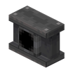

金属梁里穿轴，天花板走线的门面。
参数
材料金属梁 + 1 传动杆
方向仅水平
拆解扳手退轴
详细教程
怎么获得
先做金属梁：3 块铁板加 3 个安山合金，一次出 8 根；再手持传动杆右击一段水平金属梁，就得到包住轴的梁，一根梁吃一根轴。
注意只能水平施工，竖直的金属梁接不上轴；摆放前先确认这一段是横向走线，别等装完才发现方向反了，返工要拆一整片。竖直段改走锁链传动或普通包轴。
怎么用
它就是被梁包住的水平轴，转速照常传递，外观是一整条带凹槽的梁，适合做天花板或墙面的明线，走线一目了然。转速经它传递不升也不降。
梁两端可以继续接普通传动杆或齿轮箱；因为梁体可含水，架在水池或喷泉上方也不会被冲掉，还能顺便当装饰承重，潮湿环境也不怕。
常见坑
用扳手右击会拆回金属梁并退还 1 根传动杆，梁体本身保留；改线时基本不浪费材料，但拆一次就要重新对准轴心。拆装时相邻的梁和轴都不受影响。
竖直方向完全不能用，想上下走线得换普通轴或锁链传动；它也只吃水平轴，斜着摆不认，别对着墙硬试半天。斜放同样无效，只能沿一条直线铺。
获取方式
这个物品没有合成配方：它由工具或机器直接生成/放置（例如用扳手、连接器、部署器，或作为其他配方的产物）。具体见上方教程。
官方教程 · 使用传动杆传递旋转力
- 传动杆能直线传递旋转力